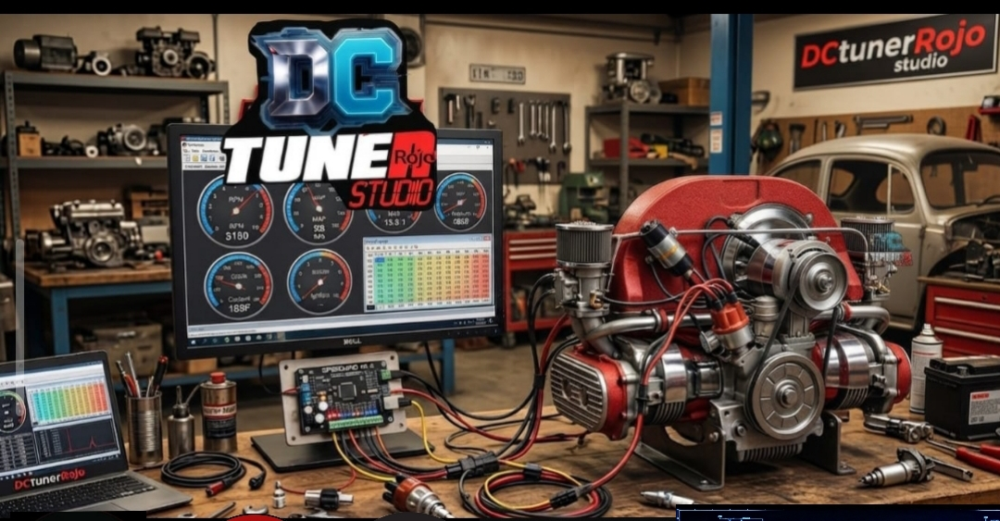
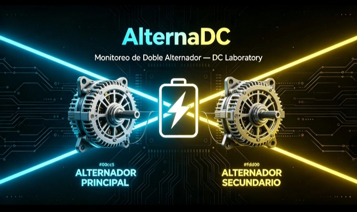
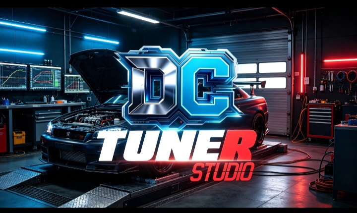

DCtuneRstudio
Mapas, parámetros, telemetría y lectura de datos para trabajar con una interfaz inspirada en Tuner Studio y preparada para varias plataformas.
SPECIAL EDITION · RED WORKSHOP SYSTEM
Una edición especial que mezcla el corazón de Tuner Studio con el enfoque de diagnóstico del Taller ROJO y el monitoreo eléctrico de AlternaDC. Una misma estación para ajustar la ECU, revisar el estado del vehículo y entender la energía que lo mantiene trabajando.

Red Edition conecta tres capas que normalmente viven separadas: calibración y telemetría ECU, diagnóstico práctico de taller y control de la energía de a bordo. La idea es que el técnico vea el vehículo completo, desde la señal del motor hasta los alternadores que sostienen el sistema.
Mapas, parámetros, telemetría y lectura de datos para trabajar con una interfaz inspirada en Tuner Studio y preparada para varias plataformas.
El enfoque del taller automotriz: diagnóstico, electricidad, mantenimiento y soluciones claras para convertir los datos en una acción concreta.
Voltaje, corriente, potencia, carga y alertas de dos alternadores para entender la salud eléctrica mientras el vehículo está en operación.

Paquetes directos publicados en el repositorio de DCtuneRstudio. Elige tu plataforma; la edición Red conserva el mismo núcleo multiplataforma.
Abre las páginas dedicadas de ROJO y AlternaDC para conocer cada parte del taller y su documentación.
Diagnóstico, electricidad y mantenimiento automotriz.
Visitar página de ROJO ↗Monitoreo de dos alternadores, alertas y panel local.
Visitar página de AlternaDC ↗Acceso al proyecto asociado publicado en GitHub Pages.
Abrir proyecto online ↗
Panel web del sistema de monitoreo eléctrico.
Abrir panel online ↗Las descargas muestran los artefactos actualmente publicados por DCtuneRstudio. Para verificar cambios, código fuente y notas de plataforma consulta el repositorio oficial ↗.